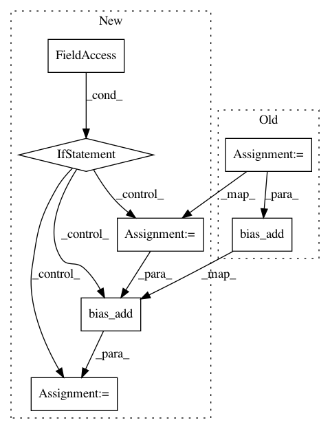

8df6b252447e160c2433f2f5e0f5343f7451876b,models/utils.py,,fc_layer,#,220
Before Change
wd: weight decay
Returns the fc layer
W = weight("W", shape)
b = bias("b", [shape[1]])
// Add weight decay to W
weight_decay = tf.multiply(tf.nn.l2_loss(W), wd, name="weight_loss")
tf.add_to_collection(LOSSES_COLLECTION, weight_decay)
return activation(tf.nn.bias_add(tf.matmul(input_x, W), b))
def batch_norm(layer_output, is_training_, decay=0.9):
After Change
W = weight("W", shape, wd=wd)
result = tf.matmul(input_x, W)
if bias_term:
b = bias("b", [shape[1]])
result = tf.nn.bias_add(result, b)
return activation(result)
def batch_norm(layer_output, is_training_, decay=0.9):
In pattern: SUPERPATTERN
Frequency: 3
Non-data size: 7
Instances
Project Name: galeone/dynamic-training-bench
Commit Name: 8df6b252447e160c2433f2f5e0f5343f7451876b
Time: 2017-02-14
Author: nessuno@nerdz.eu
File Name: models/utils.py
Class Name:
Method Name: fc_layer
Project Name: galeone/dynamic-training-bench
Commit Name: 8df6b252447e160c2433f2f5e0f5343f7451876b
Time: 2017-02-14
Author: nessuno@nerdz.eu
File Name: models/utils.py
Class Name:
Method Name: conv_layer
Project Name: galeone/dynamic-training-bench
Commit Name: 8df6b252447e160c2433f2f5e0f5343f7451876b
Time: 2017-02-14
Author: nessuno@nerdz.eu
File Name: models/utils.py
Class Name:
Method Name: atrous_conv_layer